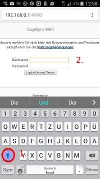

Benutzung des Wlan¶
Das schuleigene WLAN (SSID: COPGYMWLAN) ist erst einmal für die Lehrer vorgesehen. Da das WLAN mit einem WPA2-Key verschlüsselt wurde, benötigen Sie bei der ersten Verbindung mit dem WLAN diesen WPA-Key. Dieser Schlüssel wurde jedem Kollegen ins Fach gelegt. Sollten sie den Schlüssel verlegt haben oder keinen bekommen haben, fragen Sie den Netzwerkberater (Hu), der Ihnen den Schlüssel erneut aushändigt. Bitte beachten Sie, dass eine Weitergabe des WPA2-Keys einen Verstoß gegen die Nutzungsordnung darstellt (siehe dazu An- und Abmelden ).
Mit dem Wlan verbinden¶
Verbinden Sie ihr mobiles Gerät mit dem Wlan COPGYMWLAN. Wenn die Verbindung zum ersten Mal hergestellt wird, werden Sie zur Eingabe des WPA2-keys aufgefordert. Achten Sie bitte darauf, dass Sie den recht langen Schlüssel korrekt eingeben (Groß- Kleinschreibung beachten). Auf manchen mobilen Geräten kommt es vor, dass die Software den Anfang eines vermeintlichen Satzes automatisch groß schreibt. Sie können das verhindern, indem Sie die Hochstelltaste drücken, bis diese nicht mehr farblich markiert ist. (1.) (kann bei Geräten verschiedener Hersteller auch anders funktionieren).
Wenn Sie den WPA2-Key korrekt eingegeben haben, sollte sich automatisch ein Browser öffnen, der Ihnen die Anmeldeseite des Wlans zeigt. Melden Sie sich hier bitte mit Ihren normalen Anmeldedaten an. (2.) Wenn die automatische Weiterleitung nicht funktioniert, öffnen Sie einen beliebigen Browser, geben in die Adressleiste irgendeine URL ein (z.B. www.ard.de).
Warnung
Die Weiterleitung funktioniert nicht, wenn Sie von einer https-Seite kommen (z.B. https://www.google.de). Sie werden dann nicht zur Anmeldeseite weitergeleitet und können sich dann nicht am Wlan anmelden!!!!
Hat die Weiterleitung auf die Anmeldeseite funktioniert, können Sie sich mit ihren gewohnten Anmeldedaten am Wlan anmelden.
Drucken aus dem Wlan¶
Das Drucken vom Wlan aus ist im Moment nicht möglich!
Schulkonsole aus dem Wlan¶
Wichtig
Aus dem Wlan erreichen Sie die Schulkonsole nicht.
Mit den Schullaptops und den Ipads ins WLan¶
Die ausleihbaren Laptops (befinden sich im selben Raum, in dem sich auch die CD-Player etc. befinden) sind bereits im WLan registriert, sodass Sie hier nur einen Browser öffnen müssen und sich mit ihren Anmeldedaten einloggen können. Eine Eingabe des WPA2-Keys ist nicht notwendig. Das gilt ebenso für die 28 Ipads.
Leistungsfähigkeit des Wlan¶
Ob das von der Firma LPC eingebaute Wlan leistungsfähig genug ist, um damit mit einer ganzen Klasse zu surfen oder zu recherchieren, muss sich erst noch herausstellen. Erste Erfahrungswerte machen eher skeptisch. Weitere intensive Test werden notwendig sein. Nicht nur deshalb drängt sich folgendes Vorgehen auf:
Bring Your Own Device?¶
Es erscheint aus zwei Gründen(vorerst) nicht ratsam, die Schüler mit ihren eigenen Geräten ins Wlan zu lassen.
- Die Schüler haben ohnehin zumeist eine Flatrate und können damit ohnehin ins Internet. Wenn man nur mal kurz die Schüler etwas recherchieren lassen möchten, brauchen die Schüler also keinen Zugang zum WLan.
- Wenn Sie den Schülern vorübergehend Zugang zum WLan gewähren (ein dauerhafter Zugang ist aus naheliegenden Gründen ausgeschlossen), halten die Geräte der Schüler auch dann Verbindung mit den Accesspoints, wenn der Zugang zum Internet wieder gesperrt ist. Das belastet trotzdem auf Dauer die Leistungsfähigkeit der Accesspoints erheblich. Die Handys etc. der Schüler sollten während der Schulzeit zwar ausgeschaltet sein, aber davon sollte man nicht ausgehen.
- Aus diesen Gründen ist es ratsam, den Zugriff der Schüler auf das WLan auf die vorhandenen Geräte (Laptops und Ipads zu beschränken.
Den Schülern mit den IPads vorübergehend Zugang zum Wlan ermöglichen¶
Um den Schülern bei der Abreit Zugang zum Wlan zu gewähren gehen sie folgendermaßen vor:
- Melden Sie sich an einem Rechner im Haus (Computerräume, R210, Lehrerzimmer, Bibliothek) an der Schulkonsole an. Wechseln Sie in den Bereich “Klassenliste” im Menu “Klassen”.

- Wählen Sie die entsprechende Klasse aus und tragen Sie sich in diese ein.
- Sie sehen nun eine Übersicht über die ausgewählte Klasse. Wählen Sie den Bereich “Unterricht” im Menu “Klassen”.

- Klicken Sie auf “Unterricht beginnen”
- Wählen Sie aus, bis wann der Unterricht dauern soll.
Wichtig
Die Schüler haben nun solange Zugang zum Wlan, bis Sie den Unterricht in der Schulkonsole beenden oder der Unterricht gemäß der von Ihnen angegebenen Uhrzeit automatisch beendet wird.

- Srcollen Sie in der Klassenlist ganz nach unten, klicken Sie in das Kästchen über dem Schalter “an” (1), um allen Schülern der Klasse Zugang zum Wlan zu gewähren.

Wichtig
Klicken Sie auf den Schalter “Änderungen übernehmen”, um den Vorgang abzuschließen.
Die Schüler haben nun Zugriff auf das Wlan. Sie können sich nun mit ihren Zugangsdaten am Wlan anmelden, indem sie sich im Browser des jeweiligen Gerätes anmelden ( funktioniert genauso wie bei den Lehrern. Siehe dazu Mit dem Wlan verbinden ).